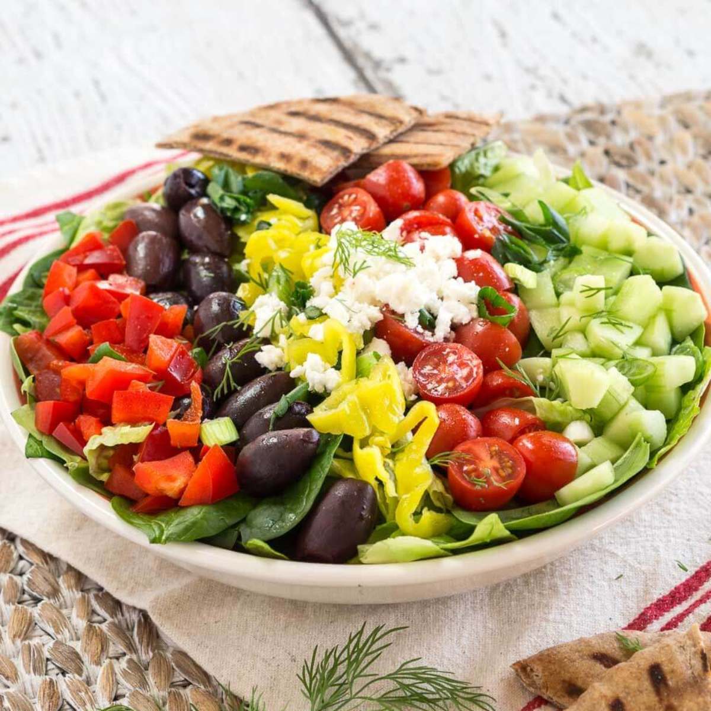

Greek Salad with Lemon-Olive Oil Dressing

Description
This fresh and vibrant Greek salad is a celebration of Mediterranean flavors. Made with crisp vegetables, briny olives, and tangy feta cheese, it’s topped with a simple lemon-olive oil dressing. No cooking required—just toss and enjoy as a light meal or side dish.
Ingredients
- 2 large tomatoes, chopped.
- 1 cucumber, sliced.
- 1/2 red onion, thinly sliced.
- 1 green bell pepper, chopped.
- 1/2 cup Kalamata olives.
- 1/2 cup crumbled feta cheese.
- 3 tbsp extra virgin olive oil.
- 1 tbsp lemon juice.
- 1 tsp dried oregano.
- Salt and pepper to taste.
Steps
- In a large bowl, combine tomatoes, cucumber, red onion, bell pepper, and olives.
- In a small bowl, whisk together olive oil, lemon juice, oregano, salt, and pepper.
- Pour dressing over the vegetables and toss gently.
- Top with crumbled feta cheese.
- Serve immediately, ideally chilled or at room temperature.
Home